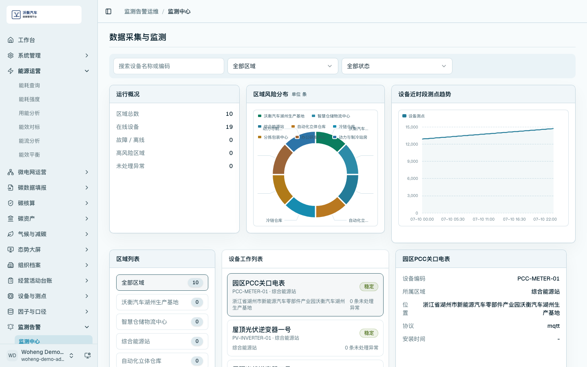
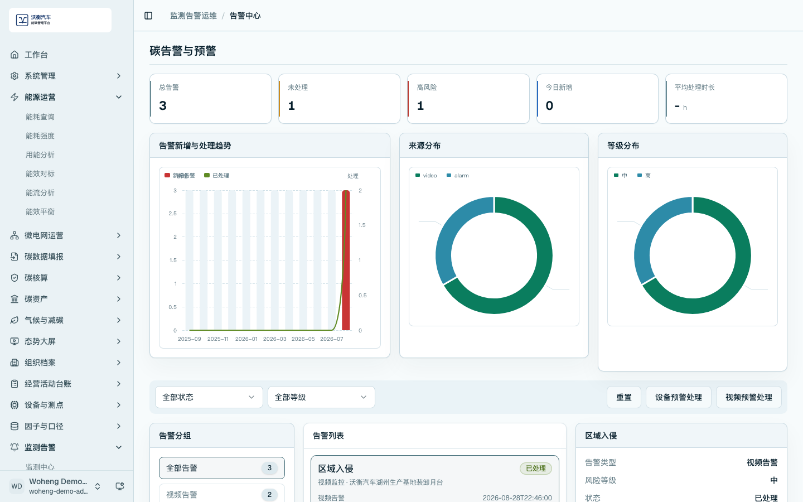
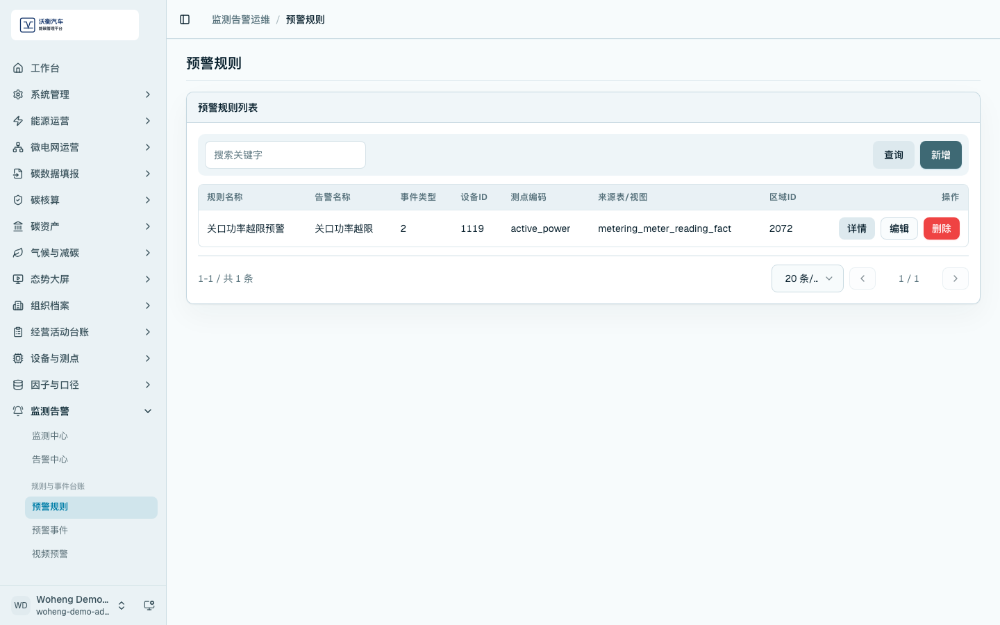
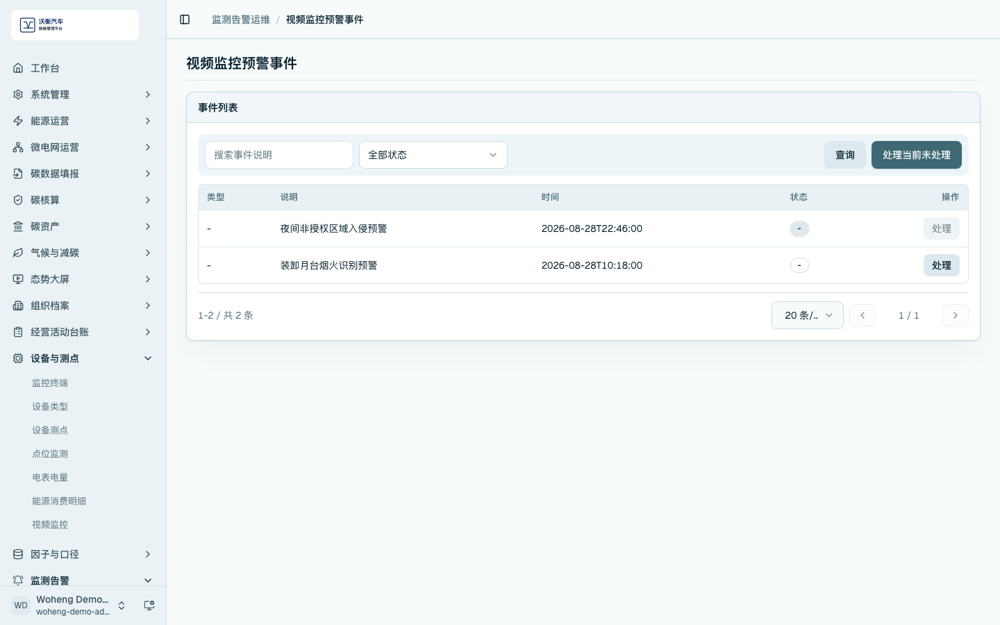
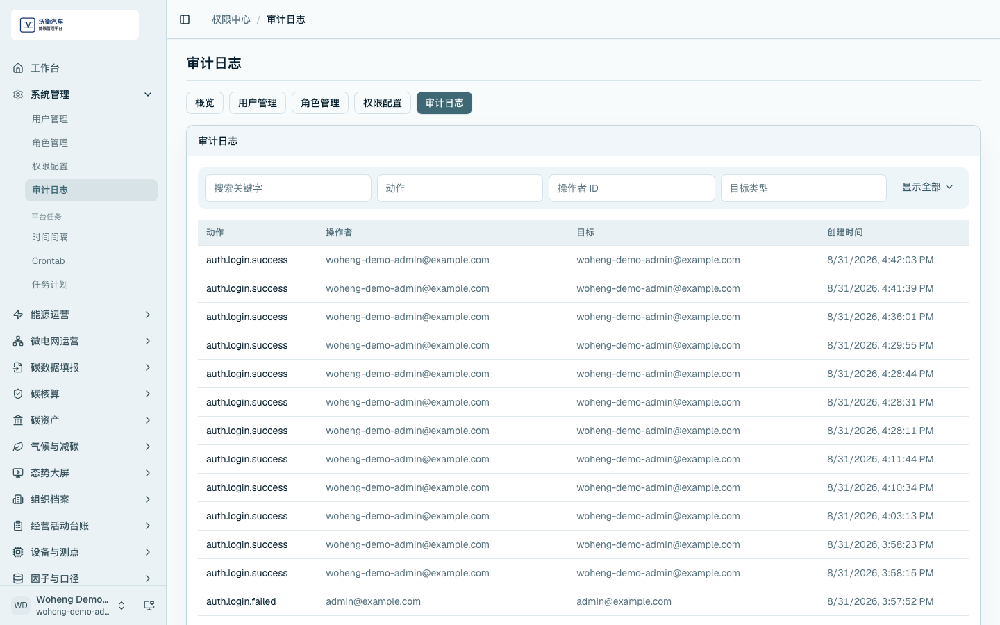

监测告警与处理留痕
监测告警模块用于从设备、测点、能耗、碳排和视频预警中识别异常，并形成处理过程记录。
数据采集与监测中心
进入 /energy-carbon/monitor，查看运行概况、区域风险分布、设备近时段测点趋势和设备工作列表。页面应显示设备编码、协议、测点趋势和区域风险信息。

碳告警与预警中心
进入 /energy-carbon/alerts，查看总告警、告警新增与处理趋势、来源分布、告警列表、告警类型和风险等级。演示时可选择一条告警说明处理状态和责任追踪。

预警规则
进入 /data/alarm-rules，查看规则名称、告警名称、事件类型、适用区域、适用设备和阈值条件等配置。规则用于把监测数据转换为可处理的告警事项。

视频监控预警处理
进入 /energy-carbon/alerts，按来源或告警类型筛选视频预警事项，查看事件说明、发生时间、风险等级、处理状态和处理动作。视频预警与设备、能耗、碳排异常统一进入告警中心处理。

审计留痕
进入 /admin/audit，查看用户、操作和时间等记录。该页面用于说明平台可保留关键操作轨迹。
